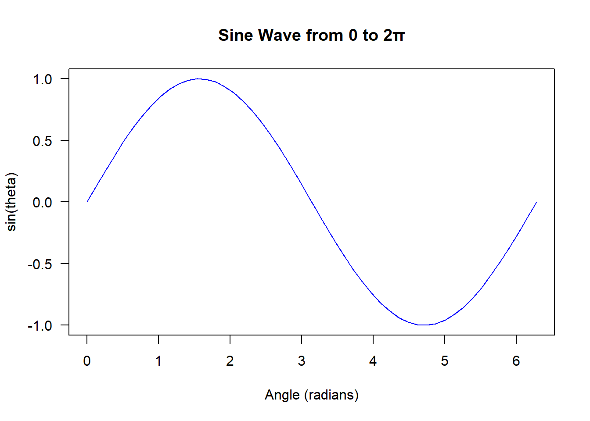
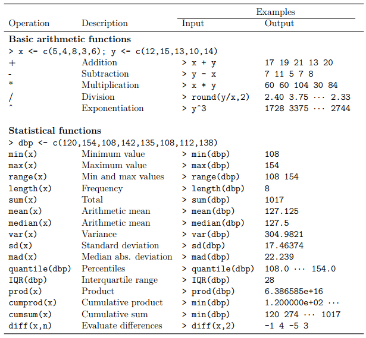
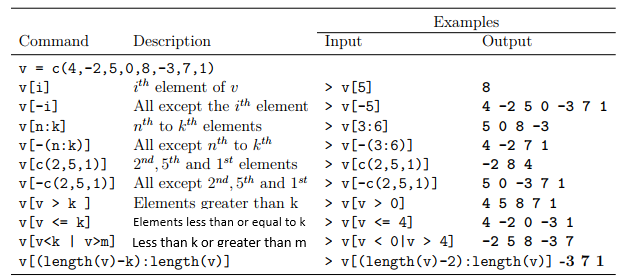
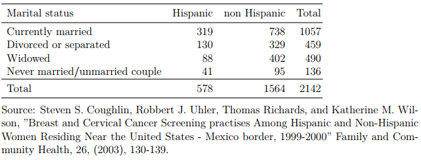
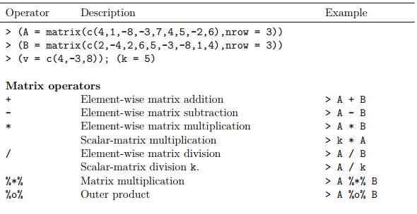
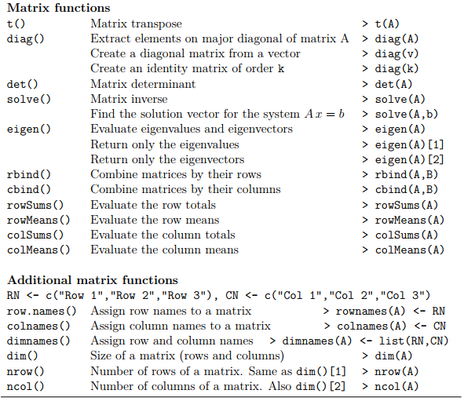
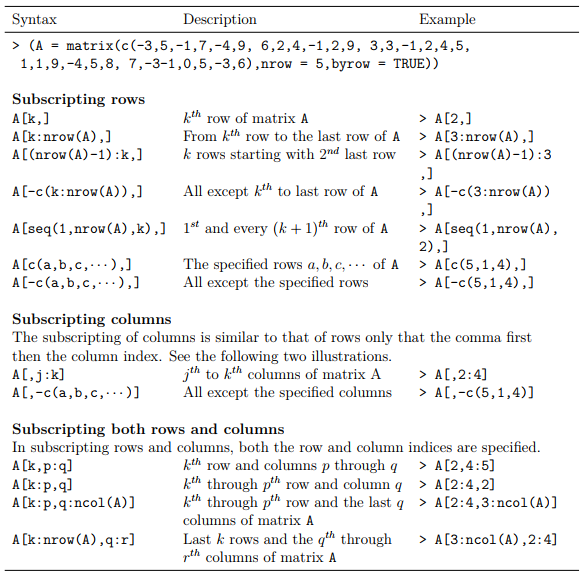

systolic_bp <- c(125, 105, 143, 132, 116)
print(systolic_bp)[1] 125 105 143 132 116To get the most out of R, professionals need hands-on mastery of its core data structures including: vector, factor, list, matrix, array, data frame, and time series—because these are the objects you’ll manipulate daily. In this module, you’ll move beyond theory and learn to operate on each structure, convert between them efficiently, and avoid the object conversion errors that frustrate most beginners. You’ll work with real scenarios where choosing the wrong structure breaks your analysis, and you’ll build the fluency to select, transform, and troubleshoot the right structure for any task.
At the end of this section, the learner should be able to:
✅ Distinguish between the major data structures in R: vectors, factors, lists, matrices, arrays, data frames, and time series.
✅ Create each data structure using appropriate R functions: c(), factor(), list(), matrix(), array(), data.frame(), ts().
✅ Inspect data structures using typeof(), class(), str(), and dim() functions.
✅ Determine the dimensionality (1D, 2D, or ND) and homogeneity (same type vs. mixed) of each structure.
✅ Select the appropriate data structure for different research scenarios (e.g., factors for categories, data frames for mixed datasets).
✅ Convert between data structures when necessary (e.g., matrix to data frame, list to vector).
The R programming language has the following data structures.
The functions class() and typeof() are used to examine the data type and internal storage mode of R objects. For a more comprehensive view, str() provides the complete structure of an object.
This is the simplest and most fundamental data structure. Almost everything in R is built on top of vectors. A vector stores a sequence of elements that are all of the same type.
🔹 Key Characteristics
TRUE / FALSE)R provides multiple flexible methods to build vectors from scratch. This section walks you through each approach hands-on, giving you the practice and confidence to create the right vector for any analysis task you will encounter.
Combine individual values into a vector using the function c().
Numeric vector
This is vector whose elements are all numeric (double or integers).
systolic_bp <- c(125, 105, 143, 132, 116)
print(systolic_bp)[1] 125 105 143 132 116Character vector
This is a vector where every element is stored as text (character data type), enclosed in quotation marks.
preferred_comm_channel <- c("Email", "SMS", "Phone", "WhatsApp")
print(preferred_comm_channel)[1] "Email" "SMS" "Phone" "WhatsApp"Generate sequences of consecutive numbers with a simple colon operator.
# Monitor progress across the first 7 days of a project
project_days <- 1:7
print(project_days)[1] 1 2 3 4 5 6 7project_days <- 7:1 # Decreasing sequence
print(project_days)[1] 7 6 5 4 3 2 1Create evenly spaced sequences using seq() with either a step size (by) or a fixed number of elements (length.out).
Specify increment
# Measure observations at 2-hour intervals
observation_times <- seq(from = 0, to = 24, by = 2)
print(observation_times) [1] 0 2 4 6 8 10 12 14 16 18 20 22 24Specify number of elements
# Generate 50 evenly spaced points from 0 to 2π
theta <- seq(from = 0, to = 2 * pi, length.out = 50)
print(theta) [1] 0.0000000 0.1282283 0.2564565 0.3846848 0.5129131 0.6411414 0.7693696
[8] 0.8975979 1.0258262 1.1540544 1.2822827 1.4105110 1.5387393 1.6669675
[15] 1.7951958 1.9234241 2.0516523 2.1798806 2.3081089 2.4363372 2.5645654
[22] 2.6927937 2.8210220 2.9492502 3.0774785 3.2057068 3.3339351 3.4621633
[29] 3.5903916 3.7186199 3.8468481 3.9750764 4.1033047 4.2315330 4.3597612
[36] 4.4879895 4.6162178 4.7444460 4.8726743 5.0009026 5.1291309 5.2573591
[43] 5.3855874 5.5138157 5.6420439 5.7702722 5.8985005 6.0267288 6.1549570
[50] 6.2831853The vector generated above can then be used, for example, to compute sine values, which are subsequently plotted to form a smooth sine curve. This is illustrated below.
# Compute sine values
y <- sin(theta)
# Plot the sine curve
plot(
theta,
y,
type = "l",
col = "blue",
las = 1,
main = "Sine Wave from 0 to 2π",
xlab = "Angle (radians)", ylab = "sin(theta)"
)
To create a decreasing sequence, set a from value that is larger than the to value, and use a negative value for by if specifying a step size.
# Cooling process
temperature <- seq(from = 100, to = 20, by = -5)
print(temperature) [1] 100 95 90 85 80 75 70 65 60 55 50 45 40 35 30 25 20Duplicate values multiple times using rep().
# 8 respondents selected "Yes"
response <- rep("Yes", times = 8)
print(response)[1] "Yes" "Yes" "Yes" "Yes" "Yes" "Yes" "Yes" "Yes"# Two treatment groups, each with 6 participants
group <- rep(c("Control", "Treatment"), each = 6)
print(group) [1] "Control" "Control" "Control" "Control" "Control" "Control"
[7] "Treatment" "Treatment" "Treatment" "Treatment" "Treatment" "Treatment"# 4 participants in Control group
# 3 participants in Treatment group
group <- rep(c("Control", "Treatment"), times = c(4, 3))
print(group)[1] "Control" "Control" "Control" "Control" "Treatment" "Treatment"
[7] "Treatment"Create factors with repeating level patterns using gl(). This is commonly used in experimental design, ANOVA and grouped data.
# General syntax
gl(n, k, labels = NULL)
# where
# n : number of levels
# k : number of repetitions for each level
# labels : optional names for levels groups <- c("Control", "Treatment")
group <- gl(n = length(groups), k = 3, labels = groups)
print(group)[1] Control Control Control Treatment Treatment Treatment
Levels: Control Treatmentrep() → repeats values you already have and returns a character vectorgl() → generates new structured factor levels automaticallyUse functions like rnorm(), rbinom(), and rpois() to simulate data from statistical distributions. The set.seed() function is used to ensure that the same random values are generated each time the code is run, making results reproducible.
5 random variates from Normal distribution with \(\mu = 0\) and \(\sigma = 1\)
set.seed(12345) # for reproducibility (same values every time)
x = rnorm(5, mean = 0, sd = 1)
print(x)[1] 0.5855288 0.7094660 -0.1093033 -0.4534972 0.60588755 random variates from Binomial distribution with size \(n = 10\) and probability of success \(p = 0.5\)
set.seed(12345)
x = rbinom(5, size = 10, prob = 0.5)
print(x)[1] 6 7 6 7 55 random variates from Poison distribution with \(\mu = 3\)
set.seed(12345)
x = rpois(5, lambda = 3)
print(x)[1] 4 5 4 5 3Random variates from other statistical distributions can be generated in a similar way using their corresponding functions.
Access pre-defined vectors for uppercase letters (LETTERS), lowercase letters (letters), month abbreviations (month.abb), and full month names (month.name).
| Constant | Description | Result |
|---|---|---|
LETTERS |
Uppercase English alphabet letters | "A" "B" "C" ... "Z" |
letters |
Lowercase English alphabet letters | "a" "b" "c" ... "z" |
month.abb |
Abbreviated month names | "Jan" "Feb" "Mar" ... "Dec" |
month.name |
Full month names | "January" "February" ... "December" |
Names make vectors self-documenting and enable name-based subsetting.
Two Ways to Create Named Vectors
Method 1: Assign names during creation
sales <- c(Qtr1 = 6852, Qtr2 = 7230, Qtr3 = 4170, Qtr4 = 5714)
print(sales)Qtr1 Qtr2 Qtr3 Qtr4
6852 7230 4170 5714 Method 2: Create vector first, then add names
monthly_sales <- c(
5112, 6422, 4145, 5682, 5773, 3555,
6841, 5829, 5206, 6170, 7233, 4499
)
names(monthly_sales) <- month.abb
print(monthly_sales) Jan Feb Mar Apr May Jun Jul Aug Sep Oct Nov Dec
5112 6422 4145 5682 5773 3555 6841 5829 5206 6170 7233 4499 Accessing Named Elements
Retrieve vector elements using their assigned names.
Retrieve a single value
jan_sales <- monthly_sales["Jan"]
print(jan_sales) Jan
5112 Retrieve multiple single values
qtr1_sales <- monthly_sales[c("Jan", "Feb", "Mar")]
print(qtr1_sales) Jan Feb Mar
5112 6422 4145 Retrieve all Names of Named Vector
Use names() to view all assigned names in a vector.
months <- names(monthly_sales)
print(months) [1] "Jan" "Feb" "Mar" "Apr" "May" "Jun" "Jul" "Aug" "Sep" "Oct" "Nov" "Dec"Retrieve all Values of Named Vector
Extract the actual data stored in the vector.
sales <- unname(monthly_sales)
print(sales) [1] 5112 6422 4145 5682 5773 3555 6841 5829 5206 6170 7233 4499Note that the above is equivalent to removing the names, which can also be achieved as follows.
names(monthly_sales) <- NULL
print(sales) [1] 5112 6422 4145 5682 5773 3555 6841 5829 5206 6170 7233 4499Most operations that occur in mathematics can be applied to vectors to produce new results. These operations and functions are presented in the table below.

The knowledge of Slicing objects in R will be very critical when handling most of the statistical, datascience, machine learning and artificial intelligence routines. In this section, we demonstrate briefly how to index and slice vector objects.

In real-world data work, you will frequently replace values in a vector—either by typing them directly or deriving them from calculations. R provides powerful tools for this, but this section focuses on the basic techniques you will reach for every day.
original_scores <- c(43, 62, 50, 45, 35, 28, 31, 34, 38, 41)
# replace elements in positions 2, 7 and 4
# with 200, 400 and 300 respectively
modified_scores <- original_scores # create a copy
modified_scores[c(2, 7, 4)] <- c(200, 400, 300)
# combine into data frame (for viewing)
comparison_table <- data.frame(
Original = original_scores,
Modified = modified_scores
)
print(comparison_table) Original Modified
1 43 43
2 62 200
3 50 50
4 45 300
5 35 35
6 28 28
7 31 400
8 34 34
9 38 38
10 41 41scores <- c(43, 62, 50, 45, 35, 28, 31, 34, 38, 41)
# create a copy of the original vector
modified_scores <- scores
# multiply even `scores` by 10
modified_scores[modified_scores %% 2 == 0] <-
modified_scores[modified_scores %% 2 == 0] * 10
# combine into data frame (for comparison)
comparison_table <- data.frame(
Original = scores,
Modified = modified_scores
)
print(comparison_table) Original Modified
1 43 43
2 62 620
3 50 500
4 45 45
5 35 35
6 28 280
7 31 31
8 34 340
9 38 380
10 41 41Use the sort() function to order numeric or character vectors in ascending or descending sequence. The decreasing argument controls the sort direction: FALSE (default) for ascending order, TRUE for descending order. When missing values are present, the na.last argument determines their placement: TRUE positions NAs at the end, FALSE places them at the beginning, and NA removes them entirely from the output.
Data
u = c(NA, "A", "B", "F", "D", NA, "K", "M", "D", "C")
print(u) [1] NA "A" "B" "F" "D" NA "K" "M" "D" "C"Character vector: Decreasing order, missing values at the beginning
v = sort(u, decreasing = TRUE, na.last = FALSE)
print(v) [1] NA NA "M" "K" "F" "D" "D" "C" "B" "A"Numeric vector: Ascending order, missing values at the end
x = c(26, 35, NA, 38, NA, 31, 40, 28, 35)
y = sort(x, decreasing = FALSE, na.last = TRUE)
print(y)[1] 26 28 31 35 35 38 40 NA NAUse the rank() function to assign ranks to elements of a vector. The ties.method argument specifies how tied values should be handled, with options including "min", "max", "first", "average", and "random". The na.last argument controls the placement of missing values, accepting TRUE (NAs at the end), FALSE (NAs at the beginning), NA (remove NAs), or "keep" (preserve NAs with rank NA).
Data
u = c(26, 35, NA, 38, NA, 31, 38, 28, 35)
print(u)[1] 26 35 NA 38 NA 31 38 28 35Exclude missing values before ranking
v = rank(u, ties.method = "min", na.last = NA)
print(v)[1] 1 4 6 3 6 2 4Rank the first of the tied values first and retain missing values but do not rank them
v = rank(u, ties.method = "first", na.last = "keep")
data = data.frame(v = u, Ranks = v)
print(data) v Ranks
1 26 1
2 35 4
3 NA NA
4 38 6
5 NA NA
6 31 3
7 38 7
8 28 2
9 35 5Take average ranks, and missing values should be ranked last
v = rank(u, ties.method = "average", na.last = TRUE)
data = data.frame(v = u, Ranks = v)
print(data) v Ranks
1 26 1.0
2 35 4.5
3 NA 8.0
4 38 6.5
5 NA 9.0
6 31 3.0
7 38 6.5
8 28 2.0
9 35 4.5Take average ranks, and missing values should be ranked first
v = rank(u, ties.method = "average", na.last = FALSE)
data = data.frame(v = u, Ranks = v)
print(data) v Ranks
1 26 3.0
2 35 6.5
3 NA 1.0
4 38 8.5
5 NA 2.0
6 31 5.0
7 38 8.5
8 28 4.0
9 35 6.5A factor is a data structure used to store categorical data. It is an integer vector where each integer corresponds to a level (unique category). Factors are essential for statistical modeling, data visualization, and functions that treat categories distinctly from continuous numbers.
ses = sample(
x = c("Low", "Middle", "High"),
size = 60,
replace = TRUE,
prob = c(25, 60, 15)
)
print(ses) [1] "Middle" "Middle" "Middle" "Low" "High" "Middle" "Middle" "Low"
[9] "Middle" "Middle" "Middle" "Middle" "Middle" "Middle" "High" "Middle"
[17] "Middle" "High" "Low" "Low" "Middle" "Low" "Middle" "Middle"
[25] "Middle" "Low" "Middle" "Middle" "Low" "Middle" "Middle" "High"
[33] "High" "Low" "Middle" "Low" "Middle" "High" "Low" "Middle"
[41] "Middle" "Middle" "Middle" "Middle" "Low" "High" "Low" "Middle"
[49] "Middle" "Low" "Middle" "Low" "Middle" "Middle" "Middle" "Low"
[57] "Middle" "High" "Low" "High" Converting character variables to factors is useful for several reasons:
The example below demonstrates the result of using table() on a character vector before conversion to a factor.
library(tidyr)
library(dplyr)
tab <- tibble(ses = ses) %>% count(ses) %>% as.data.frame()
print(tab) ses n
1 High 9
2 Low 16
3 Middle 35Issue identified: The categories appear in alphabetical order (High, Low, Middle), which is not meaningful for this variable.
Desired order: Low → Middle → High since this is an ordinal variable (order is important).
Solution: Convert ses to a factor and specify the correct level order using the levels argument.
ses_factor <- factor(ses, levels = c("Low", "Middle", "High"))
print(ses_factor) [1] Middle Middle Middle Low High Middle Middle Low Middle Middle
[11] Middle Middle Middle Middle High Middle Middle High Low Low
[21] Middle Low Middle Middle Middle Low Middle Middle Low Middle
[31] Middle High High Low Middle Low Middle High Low Middle
[41] Middle Middle Middle Middle Low High Low Middle Middle Low
[51] Middle Low Middle Middle Middle Low Middle High Low High
Levels: Low Middle HighNow tabulate the results again and note that socio-economic status have been presented in the correct order.
tab <- tibble(ses = ses_factor) %>%
count(ses) %>%
as.data.frame()
print(tab) ses n
1 Low 16
2 Middle 35
3 High 9Unlike the alphabetical order seen earlier, the table now arranges categories in the desired logical sequence: (Low, Middle, High) making the output more meaningful for interpretation.
An ordered factor is a factor where the levels have a natural order or ranking. Unlike standard (nominal) factors where levels have no inherent sequence, ordered factors preserve the directional relationship between categories (e.g., Low < Medium < High).
To preserve a logical sequence among categories, create an ordered factor using ordered(). This function mirrors factor() in syntax and arguments. The example below demonstrates converting the ses vector into an ordered factor with the correct level order.
ses <- ordered(ses, levels = c("Low", "Middle", "High"))
ses [1] Middle Middle Middle Low High Middle Middle Low Middle Middle
[11] Middle Middle Middle Middle High Middle Middle High Low Low
[21] Middle Low Middle Middle Middle Low Middle Middle Low Middle
[31] Middle High High Low Middle Low Middle High Low Middle
[41] Middle Middle Middle Middle Low High Low Middle Middle Low
[51] Middle Low Middle Middle Middle Low Middle High Low High
Levels: Low < Middle < HighThe ordered() syntax above is equivalent to using factor() with ordered = TRUE:
ses <- factor(
ses,
levels = c("Low", "Middle", "High"),
ordered = TRUE
)
ses [1] Middle Middle Middle Low High Middle Middle Low Middle Middle
[11] Middle Middle Middle Middle High Middle Middle High Low Low
[21] Middle Low Middle Middle Middle Low Middle Middle Low Middle
[31] Middle High High Low Middle Low Middle High Low Middle
[41] Middle Middle Middle Middle Low High Low Middle Middle Low
[51] Middle Low Middle Middle Middle Low Middle High Low High
Levels: Low < Middle < HighA list is a 1-dimensional data structure that can hold elements of different data types and different structures. Unlike vectors which require all elements to be the same type, lists are heterogeneous and can contain vectors, matrices, data frames, functions, or even other lists.
daily_intake <- list(
date = "2024-03-15",
calories = 2100,
protein_grams = 85,
carbs_grams = 250,
fat_grams = 70,
meals = c("Breakfast", "Lunch", "Dinner", "Snack")
)
print(daily_intake)$date
[1] "2024-03-15"
$calories
[1] 2100
$protein_grams
[1] 85
$carbs_grams
[1] 250
$fat_grams
[1] 70
$meals
[1] "Breakfast" "Lunch" "Dinner" "Snack" name = c(
"Jane", "Mary", "Christine", "Rose","Janet",
"Martha", "Mercy","Joyce", "Hillary","Joylin"
)
gest_weeks = c(
35.26, 38.74, 38.40, 36.65, 38.19,
37.04, 37.25, 39.68, 34.09, 35.86
)
birth_weight <- c(
3.58, 3.56, 3.48, 3.26, 2.64,
2.49, 2.86, 3.26, 2.78, 2.84
)
weeks_weight = data.frame(
gestation = gest_weeks,
birth_weight = birth_weight
)
# create the list
births = list(
mothers_name = name,
data = weeks_weight
)
print(births)$mothers_name
[1] "Jane" "Mary" "Christine" "Rose" "Janet" "Martha"
[7] "Mercy" "Joyce" "Hillary" "Joylin"
$data
gestation birth_weight
1 35.26 3.58
2 38.74 3.56
3 38.40 3.48
4 36.65 3.26
5 38.19 2.64
6 37.04 2.49
7 37.25 2.86
8 39.68 3.26
9 34.09 2.78
10 35.86 2.84Lists support a variety of operations including subsetting, modifying, combining, and converting. However, this section focuses specifically on extracting values from lists—the most common task you will perform in daily data work.
births[1] # this gives the list and the list name$mothers_name
[1] "Jane" "Mary" "Christine" "Rose" "Janet" "Martha"
[7] "Mercy" "Joyce" "Hillary" "Joylin" births[[1]] # gives the list values only (no list name) [1] "Jane" "Mary" "Christine" "Rose" "Janet" "Martha"
[7] "Mercy" "Joyce" "Hillary" "Joylin" births$data gestation birth_weight
1 35.26 3.58
2 38.74 3.56
3 38.40 3.48
4 36.65 3.26
5 38.19 2.64
6 37.04 2.49
7 37.25 2.86
8 39.68 3.26
9 34.09 2.78
10 35.86 2.84births[["data"]] # same as above, good for dynamic names gestation birth_weight
1 35.26 3.58
2 38.74 3.56
3 38.40 3.48
4 36.65 3.26
5 38.19 2.64
6 37.04 2.49
7 37.25 2.86
8 39.68 3.26
9 34.09 2.78
10 35.86 2.84A matrix organizes data in rows and columns, forming a 2-dimensional rectangular array. All elements within a matrix must be of the same type (numeric, character, or logical). R excels at matrix handling, providing advanced capabilities for:
The matrix() function is the primary tool for creating matrices in R. Its general syntax is as follows:
matrix(data, nrow, ncol, byrow, dimnames)Arguments
data
Vector containing the elements to fill the matrix.
nrow
Number of rows.
ncol
Number of columns.
byrow
Logical. TRUE fills matrix row-wise; FALSE (default) fills column-wise.
dimnames
List of character vectors providing row and column names.
Some parameters in the matrix() syntax are optional. The simplified syntax below is sufficient to create a matrix:
M = matrix(data, nrow)
In such a case:
Example

Solution
Below is the syntax for creating a matrix that holds the above data. Enter the values row by row, omitting the row and column totals—they will be computed once the matrix is created.
v = c(
319, 738,
130, 329,
88, 402,
41, 95
)
# create row names and column names
row_names = c(
"Currently married",
"Divorced or separated",
"Widowed",
"Never married"
)
col_names = c("Hispanic", "non Hispanic")
# create the matrix
data = matrix(
data = v,
nrow = 4,
ncol = 2,
byrow = TRUE,
dimnames = list(row_names, col_names)
)
data = cbind(data, Total = rowSums(data)) # row totals
data = rbind(data, Total = colSums(data)) # column totals
print(data) Hispanic non Hispanic Total
Currently married 319 738 1057
Divorced or separated 130 329 459
Widowed 88 402 490
Never married 41 95 136
Total 578 1564 2142The following table presents some common operators and functions applicable to matrices.


Use R’s indexing and slicing techniques to extract specific values, rows, columns, or combinations thereof from a matrix. The table below presents several examples.

Arrays generalize vectors and matrices: a vector is a one-dimensional array, while a matrix is a two-dimensional array. As with vectors and matrices, all elements of an array must share the same data type.
The array() function creates an array by taking a vector of values and a dim argument that specifies the dimensions. The example below creates two arrays, Outcome and Treatment, from the vector control.
# create a vector
control = c(
8, 98, 106,
15, 115, 130,
23, 213, 236,
22, 76, 98,
16, 69, 85,
38, 145, 183
)
# create the array
data = array(control, dim = c(3, 3, 2))
# assign array names, row and column names
dimnames(data) = list(
Outcome = c("Death", "Survivor", "Total"),
Treatment = c("Drug", "Placebo", "Total"),
"Age Group" = c("Age < 55", "Age >= 55")
)
print(data), , Age Group = Age < 55
Treatment
Outcome Drug Placebo Total
Death 8 15 23
Survivor 98 115 213
Total 106 130 236
, , Age Group = Age >= 55
Treatment
Outcome Drug Placebo Total
Death 22 16 38
Survivor 76 69 145
Total 98 85 183All arithmetic operations applicable to vectors and matrices also work on arrays. Slicing, however, differs slightly. Below are a few examples of array slicing.
Second row of the first matrix of the array.
data[2, , 1] Drug Placebo Total
98 115 213 Element in the 3rd row and 2nd column of the 1st matrix.
data[3, 2, 1][1] 130Second matrix
data[, , 2] Treatment
Outcome Drug Placebo Total
Death 22 16 38
Survivor 76 69 145
Total 98 85 183Arithmetic operations
age_below_55 = data[, , 1]
age_55_plus = data[, , 2]
age_group = age_below_55 + age_55_plus # get their sum
print(age_group) Treatment
Outcome Drug Placebo Total
Death 30 31 61
Survivor 174 184 358
Total 204 215 419Unlike homogeneous vectors, matrices, and arrays, data frames support heterogeneous data types. This makes them the most common R data structure for data management, analysis, visualization, and programming.
Creating a data frame from vectors
date = as.Date(
c(
"2025-04-01", "2025-04-02", "2025-04-03", "2025-04-04",
"2025-04-05", "2025-04-06", "2025-04-07"
)
)
meal_type = c(
"Breakfast", "Lunch", "Dinner", "Breakfast", "Lunch",
"Dinner", "Breakfast"
)
protein_grams = c(25L, 42L, 38L, 22L, 45L, 35L, 28L)
fiber_grams = c(
18.5, 30.2, 22.0, 28.5, 15.5, 32.0, 12.0
)
met_daily_fiber_goal = fiber_grams > 30 # UK Government / NHS threshold for 16+ years adults
# create data frame
data <- data.frame(
date = date,
meal_type = meal_type,
protein_grams = protein_grams,
fiber_grams = fiber_grams,
met_daily_fiber_goal =met_daily_fiber_goal
)
print(data) date meal_type protein_grams fiber_grams met_daily_fiber_goal
1 2025-04-01 Breakfast 25 18.5 FALSE
2 2025-04-02 Lunch 42 30.2 TRUE
3 2025-04-03 Dinner 38 22.0 FALSE
4 2025-04-04 Breakfast 22 28.5 FALSE
5 2025-04-05 Lunch 45 15.5 FALSE
6 2025-04-06 Dinner 35 32.0 TRUE
7 2025-04-07 Breakfast 28 12.0 FALSEIn time series analysis, a variable’s values are observed at regular time intervals—such as daily, weekly, monthly, quarterly, semi-annual, or annual. R provides the ts() function to create time series objects, as demonstrated by the syntax below.
Data
set.seed(1234)
v = sample(200:900, size = 20) * 5Univariate time series
Quarterly: Specify freq = 4
data_ts = ts(data = v, start = c(2025, 4), freq = 4)
print(data_ts) Qtr1 Qtr2 Qtr3 Qtr4
2025 2415
2026 1500 4110 4220 2995
2027 1485 1510 4005 2625
2028 1390 2345 2905 1915
2029 3865 1015 4300 3755
2030 2055 1970 3550 Monthly: Specify freq = 12
data_ts = ts(data = v, start = c(2025, 4), freq = 12)
data_ts Jan Feb Mar Apr May Jun Jul Aug Sep Oct Nov Dec
2025 2415 1500 4110 4220 2995 1485 1510 4005 2625
2026 1390 2345 2905 1915 3865 1015 4300 3755 2055 1970 3550 Note that the display format shown in the R console is intended for presentation purposes only. Internally, the data is stored as a time series object (a single variable). To view the internal structure, use the command View(data.ts).
Multivariate time series
For a multivariate time series, replace the vector object v with a matrix object (e.g., M), as illustrated in the code below.
set.seed(1234)
M = matrix(sample(200:900, size = 40) * 5, nrow = 8)
data.ts = ts(data = M, start = c(2025, 1), freq = 4)
data.ts Series 1 Series 2 Series 3 Series 4 Series 5
2025 Q1 2415 2625 3755 3545 2485
2025 Q2 1500 1390 2055 3115 2285
2025 Q3 4110 2345 1970 2890 4140
2025 Q4 4220 2905 3550 1535 4455
2026 Q1 2995 1915 3390 1650 1905
2026 Q2 1485 3865 4020 2710 2520
2026 Q3 1510 1015 4165 1200 2785
2026 Q4 4005 4300 3885 4130 2530Data structures in R can be converted from one type to another using specific conversion functions. However, not all conversions are valid—some may fail or produce unintended results depending on the original structure and its contents.
| Function | Description | Example | Result |
|---|---|---|---|
as.vector() |
Convert to a vector | as.vector(c(1,2,3)) |
1 2 3 |
as.numeric() |
Convert to numeric vector | as.numeric(c("1","2","3")) |
1 2 3 |
as.character() |
Convert to character vector | as.character(c(1,2,3)) |
"1" "2" "3" |
as.logical() |
Convert to logical vector | as.logical(c(1,0,1)) |
TRUE FALSE TRUE |
as.factor() |
Convert to a factor | as.factor(c("low","med","high")) |
low med highLevels: low med high |
as.matrix() |
Convert to a matrix | as.matrix(data.frame(a=1:3, b=4:6)) |
3x2 matrix a b [1,] 1 4 [2,] 2 5 [3,] 3 6 |
as.array() |
Convert to an array | as.array(matrix(1:6, nrow=2)) |
2x3 array [,1] [,2] [,3] [1,] 1 3 5 [2,] 2 4 6 |
as.list() |
Convert to a list | as.list(c(1,2,3)) |
[[1]]1 [[2]]2 [[3]]3 |
as.data.frame() |
Convert to a data frame | as.data.frame(matrix(1:6, nrow=2)) |
2x3 data frame V1 V2 V3 1 1 3 5 2 2 4 6 |
as.ts() |
Convert to a time series | as.ts(c(10,12,15,18)) |
Time Series: Start = 1 End = 4 Frequency = 1 [1] 10 12 15 18 |
as.table() |
Convert to a table | as.table(c(10,20,30)) |
A B C 10 20 30 |
as.Date() |
Convert to Date object | as.Date("2024-01-15") |
"2024-01-15" |
as.POSIXct() |
Convert to datetime | as.POSIXct("2024-01-15 14:30:00") |
"2024-01-15 14:30:00 EST" |
as.tibble() |
Convert to tibble | as.tibble(mtcars) |
# A tibble: 32 × 11 |
unlist() |
Convert list to vector | unlist(list(a=1, b=2, c=3)) |
a b c 1 2 3 |